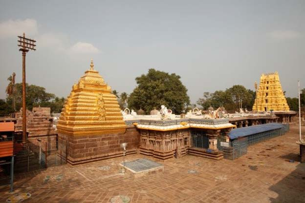
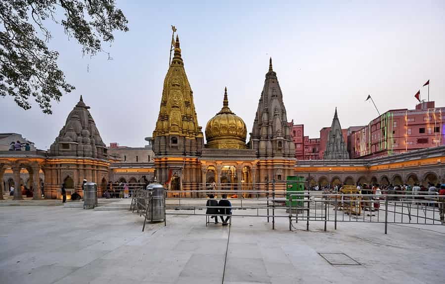
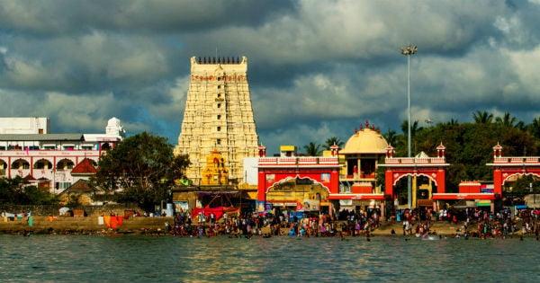

Jyotirlingas of Lord Shiva
The twelve Jyotirlingas are the most sacred manifestations of Lord Shiva, where he appeared as an infinite column of divine light (Jyoti). These holy shrines, spread across India, symbolize the eternal presence, supreme consciousness, and boundless cosmic energy of Mahadev.
Visiting or remembering these Jyotirlingas is believed to destroy negative karma, awaken spiritual wisdom, and guide devotees toward liberation (Moksha).

Somnath
Gujarat

Mallikarjuna
Srisailam, Andhra Pradesh

Mahakaleshwar
Ujjain, Madhya Pradesh

Omkareshwar
Madhya Pradesh

Kedarnath
Uttarakhand

Bhimashankar
Maharashtra

Kashi Vishwanath
Varanasi, Uttar Pradesh

Trimbakeshwar
Maharashtra

Vaidyanath
Deoghar, Jharkhand

Nageshwar
Gujarat

Rameshwaram
Tamil Nadu

Grishneshwar
Maharashtra